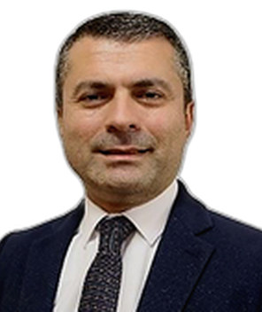

Profile
Ramin Aliyev is a professor of guidance and psychological counseling at Hasan Kalyoncu University in Gaziantep. The professor title is dated 27 March 2024. He was an associate professor there from 23 January 2019 until that date. He received a doctorate in educational psychology from Ankara University on 27 January 2011, a master’s degree in the same field on 1 September 2004, and a bachelor’s degree in guidance and psychological counseling on 18 July 2001.
Work experience
Hasan Kalyoncu University, Gaziantep, Turkey
27 March 2024Professor
Hasan Kalyoncu University
23 January 2019–27 March 2024Associate Professor
Education
PhD
27 January 2011Educational psychology
Ankara University, Turkey
Master’s degree
1 September 2004Educational psychology
Ankara University
Bachelor’s degree
18 July 2001Guidance and psychological counseling
Faculty of Educational Sciences, Ankara University
Supervision
- Master’s — Supervised completed theses at Hasan Kalyoncu University
Publications
Book chapters
1. C. Yazılan ulusal/uluslararası kitaplar veya kitaplardaki bölümler: C2. Yazılan ulusal/uluslararası kitaplardaki bölümler: Eğitim Psikolojisi, Bölüm adı:(Sosyal Bilişsel Öğrenme) (2018)., ALİYEV RAMİN, Pegem Akademi, Editör: Şerife Işık, Basım sayısı:5, Sayfa Sayısı 535, ISBN:978-605-364-573-3, Türkçe(Bilimsel Kitap)
2. Eğitimde Pozitif Psikolojisi Uygulamaları, Bölüm adı:(Azim) (2015)., ALİYEV RAMİN, Pegem Akademi, Editör: Bengü Ergüner Tekinalp, Şerife Işık, Basım sayısı:1, Sayfa Sayısı 433, ISBN:978-605-318-068-5, Türkçe(Bilimsel Kitap)
3. Haydar Aliyev ve Çağdaş Azerbaycan Devletçiliyi, Bölüm adı:(Haydar Aliyev Döneminde Kültürel, Sosyal ve Dini Gelişmeler) (2007)., ALİYEV RAMİN, Azerbaycan İstanbul Başkonsolosluğu, Editör:Sayyad Aran, Basım sayısı:1, Sayfa Sayısı 307, Türkçe(Bilimsel Kitap)
Peer-reviewed journal articles
1. s of Adolescents in the Relationship between Hope, Meaning in Life and Gratitude. Youth & Society, Doi: 10.1177/0044118X241287848
2. MIZRAK ŞEYMA, ALİYEV RAMİN (2024). The Mediating Role of Self-Regulation in the Relationship Between Parental Attitude and Locus of Control with Academic Motivation. Base for Electronic Educational Sciences, 5(2), 40-56., Doi: 10.29329/bedu.2024.1064.3
3. POLAT Meyrem Ayça, YILDIZ Muhammet, IŞIKTAŞ EMRAH, ALİYEV RAMİN (2024). Does Grit and Perceived Social Support Predicts Adolescents Future Expectations in COVID 19 Pandemic?. Turkish Psychological Counseling and Guidance Journal, 14(73), 277-291., Doi: 10.17066/tpdrd.1352250_10
4. POLAT Meyrem Ayça, ALİYEV RAMİN (2024). Hope, childhood experiences, and achievement motivation in high school students: A mixed methods study. Wiley, 61(5), 1828-1847., Doi: 10.1002/pits.23140
5. KARAMAN MEHMET AKİF, TOMAR İSMAİL HAKKI, ALİYEV RAMİN, EŞİCİ HASAN, ŞAM MEHMET, ÖZBAY YAŞAR (2023). Determination of resilience factors in individuals who tested COVID-19 positive. British Journal of Guidance & Counselling, 51(3), 338-354., Doi: 10.1080/03069885.2021.1984394
6. Erden Zehra Şeyda, ALİYEV RAMİN (2023). Anxiety and psychological needs of high school students: COVID‐19 period. Psychology in the Schools, 60(5), 1355-1373., Doi: 10.1002/pits.22767
7. Educational Psychology, 9(3), 236-251., Doi: 10.1080/21683603.2021.1904068
8. KARAMAN MEHMET AKİF, EŞİCİ HASAN, TOMAR İSMAİL HAKKI, ALİYEV RAMİN (2021). COVID-19: Are School Counseling Services Ready? Students' Psychological Symptoms, School Counselors' Views, and Solutions. Frontiers in Psychology, 12(647740), 1-14., Doi: 10.3389/fpsyg.2021.647740
9. ÖZBAY YAŞAR,BÜYÜKÖZTÜRK ŞENER,TOMAR İSMAİL HAKKI,EŞİCİ HASAN,ALİYEV RAMİN,YANCAR CENK,KURNAZ ZEYNEP (2019). Bağımlılıkla Mücadelede Koruyucu ve Önleyici Faktörlerin İncelenmesi: Yaşam Becerilerinin Rolü. Addicta: The Turkish Journal on Addictions, 6(3), 907-961., Doi: 10.15805/addicta.2019.6.3.0083
10. ALİYEV RAMİN,GENGEÇ HİLAL (2019). The Effects of Resilience and Cyberbullying on Self-Esteem. Journal of Education, 199(3), 155-165., Doi: 10.1177/0022057419858346
11. BÜYÜKÖZTÜRK ŞENER,YILMAZ SAVAŞ,ÖZBAY YAŞAR,EŞİCİ HASAN,TOMAR İSMAİL HAKKI,ALİYEV RAMİN,HOŞ HALİME YILDIRIM,ŞENFERAH SİNEM,SARAÇ MENEKŞE UYSAL,CEYHAN GÖRKEM,AKYILMAZ FATMA DERYA (2019). The Effectiveness of Addiction Prevention Training Program of Turkey on Improved Acquisition of Knowledge and Emotional Awareness about Addiction. ADDICTA: The Turkish Journal on Addictions, 6(1), 115-131., Doi: 10.15805/addicta.2018.6.1.0005
12. DEMİR ÖZGÜR OSMAN,ALİYEV RAMİN (2019). Resilience among Syrian university students in Turkey. Turkish Journal of Education, 8(1), 33-51., Doi: 10.19128/turje.454138
13. ÖZBAY YAŞAR,Yılmaz Savaş,BÜYÜKÖZTÜRK ŞENER,ALİYEV RAMİN,TOMAR İSMAİL HAKKI,EŞİCİ HASAN,YANCAR CENK,AKYILMAZ FATMA DERYA (2018). Madde Bağımlılığı: Temiz Bir Yaşam İçin Bireyin Güçlendirilmesi. Addicta: The Turkish Journal on Addictions, 5(1), 81-132., Doi: 10.15805/addicta.2018.5.1.0001
14. ALİYEV RAMİN,TUNÇ ERHAN (2015). The investigation of primary school students’ perception of quality of school life and sense of belonging by different variables. Revista de Cercetare şi Intervenţie Socială, 48, 164-182.
15. ALİYEV RAMİN,Kalgi Mehmet Emin (2014). Factors Affecting the Level of Shyness and Self-Esteem in Primary School Students. Turkish Journal of Education, 3(2), 60-69., Doi: 10.19128/turje.35145
16. ALİYEV RAMİN,Karakuş Mehmet,Ulus Hakan (2013). Teachers’ Verbal Cues That Cause Students to Feel Various Emotions. The Anthropologist, 16, 263-272., Doi: 10.1080/09720073.2013.11891354
17. ALİYEV RAMİN,ULKER Riza,SHINE EDIZER Filiz,ERGUNER TEKINALP Bengu (2012). The Perceptions of School Counselors and Principals towards New Psychological Counseling and Guidance Services in Early Childhood Education in Turkey. Educational Sciences: Theory and Practice, 12(4), 3083-3098.
18. DEMİR ÖZGÜR OSMAN, ALİYEV RAMİN (2018). Suriyeli Üniversite Öğrencilerinde Yılmazlık: Türkiye Örneği. 20. Uluslararası Rehberlik ve Psikolojik Danışma Kongresi (/Sözlü Sunum)
19. ALİYEV RAMİN,AKBAŞ UFUK,ÖZBAY YAŞAR (2018). Akademik Yılmazlık Ölçeği’nin Türkçe’ye uyarlama çalışması. 6th International Congress on Measurement and Evaluation in Education and Psychology (/Sözlü Sunum)
20. ÖZAYDIN LATİFE, METİN ŞERMİN, ALİYEV RAMİN (2016). 0-3 yaş çocuklarında sosyal yetenek ve ebeveynleri. Uluslararası Erken Çocukluk Eğitimi Kongresi (/Sözlü Sunum)
21. C. Yazılan ulusal/uluslararası kitaplar veya kitaplardaki bölümler: C1. Yazılan ulusal/uluslararası kitaplar: EĞİTİM PSİKOLOJİSİNİN TEMELLERİ - Etkili Öğretime Işık Tutan Büyük Fikirler (2024)., ALİYEV RAMİN,ARTAR MÜGE, Nobel Akademi, Editör:ARTAR MÜGE, ALİYEV RAMİN, Basım sayısı:6, Sayfa Sayısı 550, ISBN:978-625-371-602-8, Türkçe(Kitap Tercümesi)
Conference papers and abstracts
1. B. Uluslararası bilimsel toplantılarda sunulan ve bildiri kitaplarında (proceedings) basılan bildiriler: Şahin Zeynep, Demirdağ Betül, ALİYEV RAMİN (2023). Predictors of Relational Aggressıon In Adolescents: Family Experiences and Perceived Social Support. 24th International Psychological Counseling and Guidance Congress (Özet Bildiri/Sözlü Sunum)
2. Tutlu Müge Selin, ALİYEV RAMİN (2024). 6 ŞUBAT DEPREMLERİNİ YAŞAMIŞ 18-25 YAŞ ÜNİVERSİTE ÖĞRENCİLERİNDE OLUMLU ÇOCUKLUK YAŞANTILARI, YILMAZLIK VE ACININ DÖNÜŞTÜRÜCÜ GÜCÜ ARASINDAKİ İLİŞKİ. XI International Eurasian Educational Research Congress (Özet Bildiri/Sözlü Sunum)
3. Şahin Zeynep, ALİYEV RAMİN (2024). Predictors Of Academic Resilience In Adolescents: Social-emotional Learning Skills and Optimism. 25th International Psychological Counseling and Guidance Congress (Özet Bildiri/Sözlü Sunum)
4. Akol Yılmaz, ALİYEV RAMİN (2023). The Relationship Between Peer Pressure, Psychological Well- Being, and Childhood Experiences in Adolescents. 24th International Psychological Counseling and Guidance Congress (Özet Bildiri/Sözlü Sunum)
5. Demirdağ Betül, Şahin Zeynep, ALİYEV RAMİN (2023). Üniversite Öğrencilerinde Akademik Yılmazlık, Mükemmeliyetçilik ve Çocukluk Yaşantıları Arasındaki İlişkinin İncelenmesi. EDUCongress 2023 (Özet Bildiri/Sözlü Sunum)
6. ŞAM MEHMET, ALİYEV RAMİN (2023). Akademik Yılmazlık Gelişim Modeli. II. Uluslararası Ergenlik ve Gençlik Araştırmaları Kongresi (Özet Bildiri/Sözlü Sunum)
7. KARAMAN MEHMET AKİF,TOMAR İSMAİL HAKKI,ALİYEV RAMİN,EŞİCİ HASAN, Şam Mehmet, KARAKAŞ AHMET,ÖZBAY YAŞAR (2020). Identifying mental health protective factors in individuals with a positive COVID-19 history. EDUCCON Education Congress (Özet Bildiri/Sözlü Sunum)
8. KARAMAN MEHMET AKİF,TOMAR İSMAİL HAKKI,ALİYEV RAMİN,EŞİCİ HASAN,ÖZBAY YAŞAR,Şam Mehmet, KARAKAŞ AHMET (2020). Identifying Mental Health Protective Factors in Individuals with a Positive COVID-19 History. EDUCCON 2020 (Özet Bildiri/Sözlü Sunum)
9. ALİYEV RAMİN,DEMİR ÖZGÜR OSMAN,GÖKTAŞ MEHMET (2020). Öğretmen Gelişiminde Eylem Araştırması: İlk Aşama İhtiyaçların Belirlenmesi. Uluslararası Pegem Eğitim Kongresi (Özet Bildiri/Sözlü Sunum)
10. ALİYEV RAMİN,AYAZ AHMET (2019). Azim Ölçeği Geliştirmesi: Geçerlik ve Güvenirlik Çalışması. 6.Uluslararası MULTİDİSiPLİNER ÇALIŞMALARI KONGRESİ (Özet Bildiri/Sözlü Sunum)
11. ALİYEV RAMİN, AKBAŞ UFUK,ÖZBAY YAŞAR (2019). Akademik Yılmazlığın Yordanmasında İ̇çsel Faktörlerin Aracı Rolü. 6.Uluslararası MULTİDİSiPLİNER ÇALIŞMALARI KONGRESİ (Özet Bildiri/Sözlü Sunum)
12. USTA Merve, GÖKTAŞ MEHMET, ALİYEV RAMİN, ÖZBAY YAŞAR (2018). Academic Resilience And Family Functionality: A Cross- Cultural Investigation. 20. Uluslararası Psikolojik Danışma ve Rehberlik Kongresi (Özet Bildiri/Sözlü Sunum)
13. DEMİR ÖZGÜR OSMAN,ALİYEV RAMİN (2018). The Examination Of Resilience In Syrian Immigrant University Students. 20. Uluslararası Psikolojik Danışma ve Rehberlik Kongresi (Özet Bildiri/Sözlü Sunum)
14. ALİYEV RAMİN, AYAZ AHMET (2018). Üniversite Öğrencilerine Yönelik Türk Azim Ölçeğinin Geliştirilmesi: Geçerlik ve Güvenirlik Çalışmaları. ICES-UEBK 2018 (Özet Bildiri/Sözlü Sunum)
15. ALİYEV RAMİN, DEMİR ÖZGÜR OSMAN (2018). Değerler Eğitimi Programı / Gaziantep İli Örneği. ICES-UEBK 2018 (Özet Bildiri/Sözlü Sunum)
16. ALİYEV RAMİN (2017). Davetli Konuşmacı - What Editors Want?. EDUCCON 2017 (Özet Bildiri/Sözlü Sunum) (Yayın No: 4235895) 18. ALİYEV RAMİN, DEMİR ÖZGÜR OSMAN (2017). Lise Öğrencilerinde Mutluluğun Yordanmasında Yılmazlık ve Duygu Düzenlemenin Rolü. 2nd Eurasian Congress on Positive Psychology (Özet Bildiri/Sözlü Sunum)
17. ALİYEV RAMİN (2016). Davetli Konuşmacı - Akademik Yılmazlık. 3rd İnternational Conference Of Psychology (Özet Bildiri/Sözlü Sunum)
18. ALİYEV RAMİN,Berk Savaş (2015). Özel Eğitim Kurumlarında Çalışan Öğretmenlerle Devlet Okullarında Çalışan Öğretmenlerin Mesleki Tükenmişlik Ve İş Doyumu Düzeyleri Arasındaki İlişkinin İncelenmesi. II nd International Eurasian Educational Research Congress (Özet Bildiri/Sözlü Sunum)
19. ALİYEV RAMİN, Kalgi Mehmet Emin (2015). Tahripçilik (Vandalizm) Ölçeği: Geliştirmesi, Geçerliği, Güvenirliği. VII. Uluslararası Sosyal Bilimler Eğitimi Kongresi (Özet Bildiri/Sözlü Sunum)
20. On Psychology Researches, 190, 97-105., Doi: 10.1016/j.sbspro.2015.04.922 (Tam Metin Bildiri/Sözlü Sunum)
21. ALİYEV RAMİN, Karakuş Mehmet (2014). The Effects of Positive Psychological Capital and Negative Feelings on Students’ Violence Tendency. 2nd Global Conference On Psychology Researches, 190, 69-76., Doi: 10.1016/j.sbspro.2015.04.918 (Tam Metin Bildiri/Sözlü Sunum)
22. ALİYEV RAMİN, Kalgi Mehmet Emin (2014). Investigation of the Relationship between Self-Esteem Levels and Vandalism Behaviors Exhibition Levels of 1st Grade High School Students. 3TH ICEC2014 CONFERENCE (Özet Bildiri/Sözlü Sunum)
23. ALİYEV RAMİN, Ulus Hakan (2012). Türkiyede Kişilik Gelişimi ve Medya Konusunda Yapılan Çalışmaların İçerik Analizi. Uluslararası Türk Kültür Coğrafyasında Eğitim Bilimleri Araştırmalar Sempozyumu (Özet Bildiri/Sözlü Sunum)
24. ALİYEV RAMİN, AKFIRAT OSMAN NEJAT, GÖNÜLLÜ İPEK, SATMAN CEM (2006). Ergenlerin Şans Oyunları Oynama Sıklıklarının Bu Oyunları Oynama Amaçlarının Cinsiyet SED ve Bulundukları Yaş Açılarından İncelenmesi. X. EARA CONFERERANCE (Özet Bildiri/Poster)
25. Educational Sciences (JEDUS), 3(4), 79-93. (Kontrol No: 4152324) 10. E. Ulusal bilimsel toplantılarda sunulan ve bildiri kitaplarında KARAMAN MEHMET AKİF, TOMAR İSMAİL HAKKI, ALİYEV RAMİN, EŞİCİ HASAN, şam mehmet, ÖZBAY YAŞAR (2020). Identifying mental health protective factors in individuals with a positive COVID-19 history. Educcon 2020 Education Conference (Özet Bildiri/Sözlü Sunum)
26. ALİYEV RAMİN,GENGEÇ HİLAL (2016). Yılmazlık ve siber zorbalığın benlik saygısı üzerindeki etkisinin incelenmesi. 25. Ulusal Eğitim Bilimleri Kongresi (Özet Bildiri/Sözlü Sunum)
27. ALİYEV RAMİN,UÇAR MEHMET ERTUĞRUL (2015). EYLEM KİMLİKLEME ETKİLEŞİM ALGISI VE DUYGU İHTİYACI ARASINDAKİ İLİŞKİLER. 13. ULUSAL PSİKOLOJİK DANIŞMA VE REHBERLİK KONGRESİ (Özet Bildiri/Sözlü Sunum) (Yayın No: 1596738) 4. ALİYEV RAMİN,Donuk Rıdvan,Karakuş Mehmet (2015). Şiddet Eğiliminin Öncülleri: Olumsuz Duygular ve Yaşam Doyumu Bağlamında Bir İnceleme. 24. Ulusal Eğitim Bilimleri Kongresi (Özet Bildiri/Sözlü Sunum)
28. ALİYEV RAMİN,Kalgi Mehmet Emin (2013). İlköğretim Öğrencilerinin Utangaçlık ve Benlik Saygısı Düzeylerini Etkileyen Faktörler. 22. Ulusal Eğitim Bilimleri Kongresi, 3(692), 60-69., Doi: 10.19128/turje.181082 (Özet Bildiri/Sözlü Sunum)
29. ALİYEV RAMİN,TUNÇ ERHAN (2012). İlköğretim 2.Kademe Öğrencilerinin Okul Yaşam Kalitesi ve Aidiyet Duygusunun Bazı Değişkenler Açısından Değerlendirilmesi. 21. Ulusal Eğitim Bilimleri Kongresi, 48, 164-182. (Özet Bildiri/Sözlü Sunum)